Traffic Calming and Property Values In New York City: Analyzing the Economic Impact of the Prospect Park Bike Lane
AUTHORS
Jason Amey
INDIVIDUAL REPORT
Clinta Varghesehttps
INDIVIDUAL REPORT
I. Introduction
II. Methodology
III. Data Visualization and Dynamic Analysis
IV. Findings
V. Conclusion
I. Introduction
Park Slope in Brooklyn is a neighborhood of considerable interest. In 2010, it became the center of significant media attention following the New York City Department of Transportation’s (NYC DOT) decision to remove a lane of traffic on Prospect Park West - the street that runs adjacent to Prospect Park - and install a protected bike lane. This decision sparked a lawsuit and drew widespread media attention1.
Despite the initial backlash, the project proved to be a success in terms of safety metrics2 and has since become a beloved feature of the neighborhood. However, an intriguing question remains: did this transformative change have an impact on the corridor’s real estate values?
This project seeks to evaluate the potential effects of the bike lane installation on property values along Prospect Park West. To provide a comprehensive analysis, it compares Prospect Park West to all parallel streets in Park Slope - 8th Avenue, 7th Avenue, 6th Avenue and 5th Avenue - as well as Prospect Park Southwest—a park-facing street in the adjacent neighborhood of Windsor Terrace.
Through this evaluation, the project seeks to determine whether the bike lane influenced changes in the local real estate market, while also opening the door to a broader exploration of urban economics and the ever-topical issue of rising real estate values in New York City.
II. Methodology
This project investigates historical property tax assessment values in Park Slope and Windsor Terrace, Brooklyn, using data sourced from the New York City Department of Finance Property Assessment Roll Archives. These archives provide a complete digital repository of property valuation data available from 2010 to the present.
Data Collection and Preparation
Property Valuation Source: The NYC Department of Finance’s online Property Assessment Roll Archives, includes dozens of property valuation metrics for all residential and commercial properties throughout New York City.
Selected Metric: After careful consideration, the team settled on using the New Full Value, Total (NEW_FV_T) as the best metric reflecting market value of the land, the property and surrounding neighborhood trends.
Challenges with Disparate Data: The data spanned multiple years and formats, with differing data schemes. To create a consistent dataset, significant processing and cleaning were undertaken to standardize the information.
Data Filtering and Focus
Tax Classifications : NYC property is divided into four tax classifications, each reflecting a different type of property3:
- Class 1: Primarily residential properties of up to three units, including family homes and small mixed-use properties (e.g., homes with small stores or offices).
- Class 2: Larger residential properties such as rentals, cooperatives, and condominiums. This class is further subdivided:
- 2A:
4–6unit rental buildings - 2B:
7–10unit rental buildings - 2C:
2–10unit cooperative or condominium buildings
- 2A:
- Class 2 (general): Residential properties with
11or more units. - Class 3: Utility properties.
- Class 4: Commercial and industrial properties.
For this study, we focused on residential property classifications: 1, 1A, 1B, 1C, 1D, 2, 2A, 2B, 2C. These categories captured the majority of residential properties relevant to Park Slope and Windsor Terrace.
Geographic Scope: To ensure the analysis remained localized, the data was filtered for properties located within the relevant ZIP codes for Park Slope and Windsor Terrace.
Final Dataset: The cleaned and filtered dataset was saved for analysis. While the dataset covers 2010 to the present, it is acknowledged that a more robust analysis would incorporate property values from earlier periods, especially prior to the installation of the Prospect Park bike lane. This would provide greater insight into pre- and post-infrastructure changes and their potential impact on property values. The pre-2010 data is available at the New York City Municipal Archive4
Mapping: To visualize the change in property values in Park Slope, .shp files (shapefiles) were collected from the NYC Department of City Planning’s Lot Selector tool. The shapefiles were downloaded to map property parcels in the Park Slope area, enabling detailed spatial visualizations and the highlighting of valuation trends over time.
Property Value Analysis
Data Transformation: Code was developed to manipulate the original tax assessment data, enabling the calculation of percentage changes in property values across any selected range of years. For each year pair within the specified range, the code calculates the changes and appends these as new columns to the dataset, facilitating a comparison of year-over-year trends across various streets.
Statistical Analysis: A t-test was chosen to evaluate whether percentage changes in property values on Prospect Park West (PPW) differ significantly from those on parallel streets, such as 8th Avenue, 7th Avenue, and 5th Avenue. The t-test is appropriate for comparing the means of two independent groups, particularly when examining whether observed differences in property value trends are likely due to random variation or reflect genuine distinctions.
t-test Table: It was decided to create a t-test results table to provide a clear and formatted summary of the statistical comparisons performed for PPW and its neighboring streets. The table is organized by year ranges, making it easy to identify periods of significant valuation changes. By presenting the results in a structured format, the table concisely summarizes the outcomes of potentially dozens of tests at once. This approach leverages the capabilities of statistical software, providing an efficient means to review a broad range of analyses.
Ridge Plot: Ridge plots were created to add deeper insight into the density distributions of percentage changes in property values by street.
Box Plot: It was decided to create box plot visualizations for another visualization of the distribution of changes, highlighting trends, outliers, and differences in variability.
Percentage Change Summary: Summary tables were developed to aggregate key statistics for percentage changes by street. These tables calculate the mean and standard deviation for each street, providing a quantitative overview of average trends and their variability. The summaries were designed to contextualize the insights from the box and ridge plots, offering concrete data to support the observed patterns in property value changes.
III. Data Visualization and Dynamic Analysis
To effectively communicate the findings from this analysis, a dynamic web-based app was developed using Shiny and deployed on shinyapps.io. This application integrates geospatial and statistical visualizations to provide an interactive and user-friendly platform for exploring property value trends in Park Slope and Windsor Terrace. The visualizations were designed to cater to various analytical needs, from exploring geographic trends to examining statistical patterns in property values.
Mapping and Interface
Leaflet Maps: The app utilizes the leaflet R package to render detailed maps based on the .shp files collected from the NYC Department of City Planning. These interactive maps allow users to explore property parcels and their associated change in property valuations.
Time Frame Selector: The app includes an interface that allows users to specify the time frame of interest. This feature enables customized analyses, making it easy to compare property values before and after events of interest.
Here is a link to the application :
IV. Findings
Immediately following the installation of the Prospect Park bike lane in 2010, there was a noticeable statistical difference in the uptick of property values on Prospect Park West compared to its neighboring streets. Analysis of property assessment data from 2010 through 2013 revealed a consistent and significant increase in values along Prospect Park West, suggesting a positive correlation between the bike lane installation and property value appreciation:
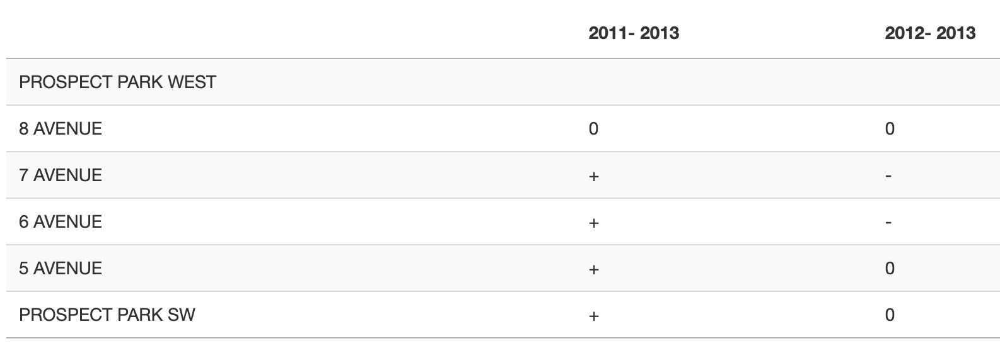
This is evident in the following ridge plot, with Prospect Park West leading other corridors in Park Slope:
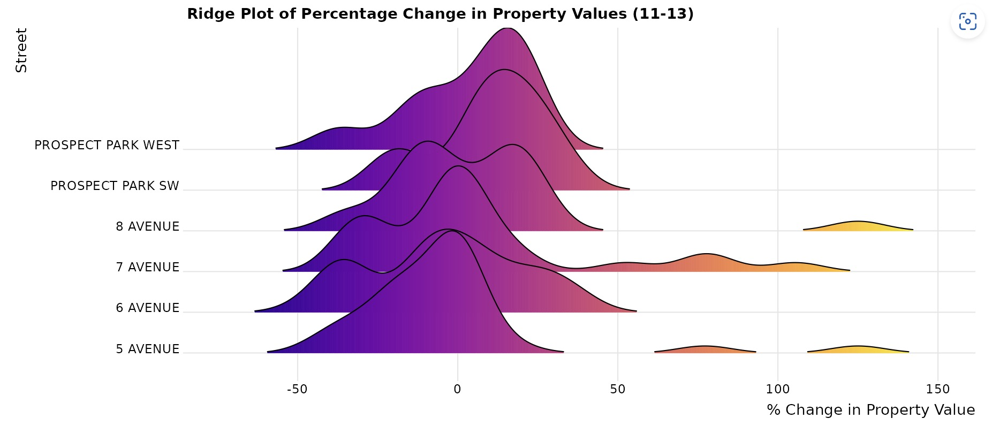
This map visualization, highlights the dominance of green on Prospect Park West compared to its neighboring streets:
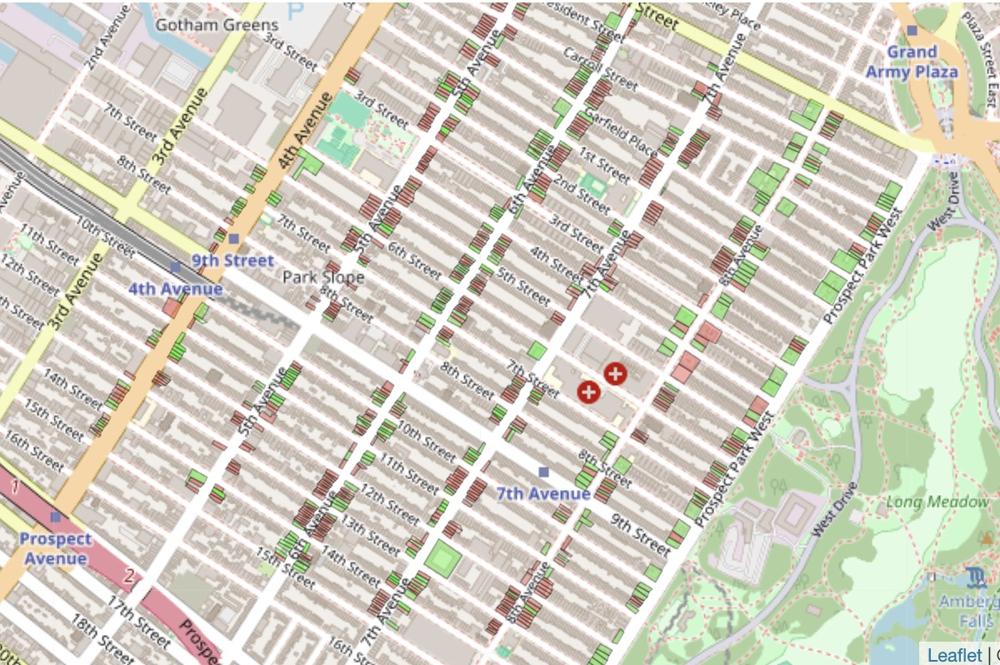
…but this analysis is arguably limited by the immeasurable economic influence of gentrification and the outsized desirability of Park Slope as a premier residential neighborhood in Brooklyn.
Here is that story in images.
5th Avenue, Park Slope 2011:
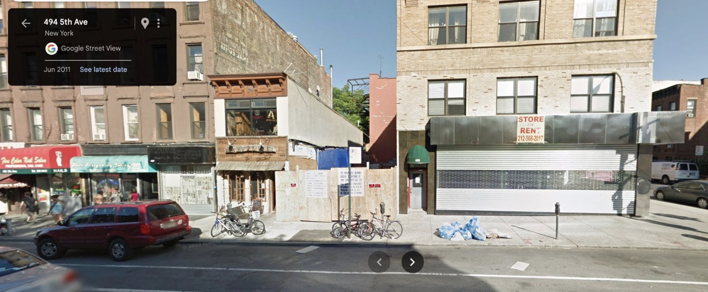
5th Avenue, Park Slope 2023:
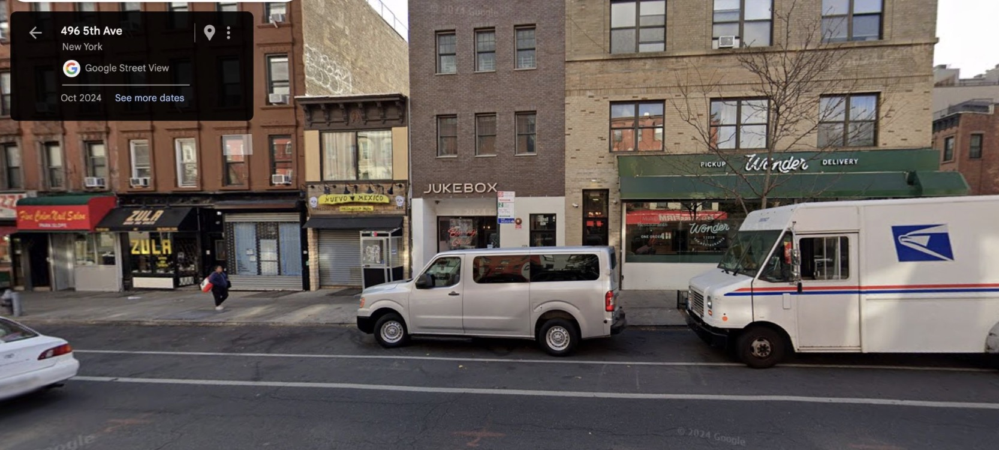
Highlighted by these images, with the financial crisis of the late 2000s in the rear-view mirror, property values in Park Slope skyrocketed, reflecting both the neighborhood’s intrinsic appeal and broader market forces. While the installation of the Prospect Park bike lane may have contributed to local value increases, isolating its specific impact from these larger trends presents a challenge in the face of gentrification.
This ridge plot vividly demonstrates the dominant role of gentrification in driving property value changes in Park Slope during the mid-2010s.The clustering of density curves toward higher percentage changes underscores the broad and profound market pressures, as the neighborhood became increasingly attractive to higher-income residents amplifying the impact of gentrification during this period:
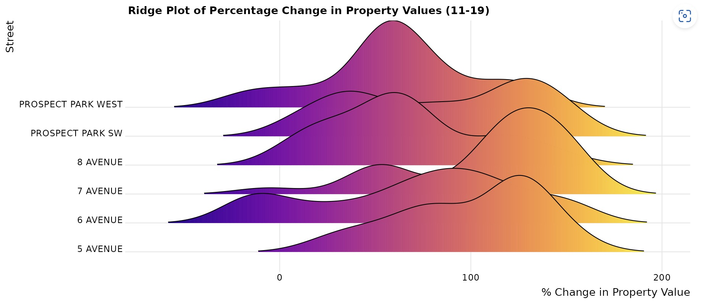
Reflecting the influx of new businesses, you can see the pronounced effect of gentrification with the high peaks of the 2 dominant commercial stretches in Park Slope: 5th avenue and 7th avenue during the prime growth years of the2010’s:
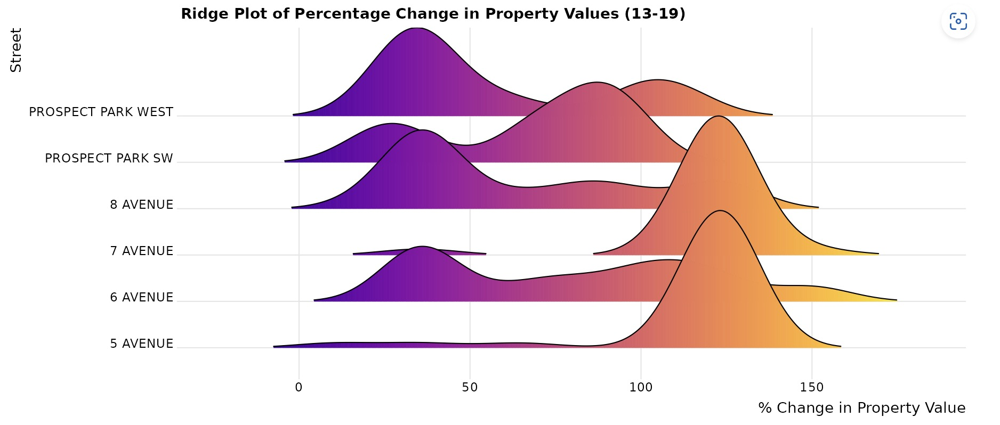
The pre-Covid 2010’s truly represented a period of healthy valuations of Park Slope real estate:
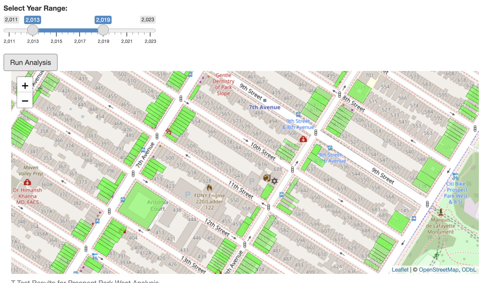
The dominance of gentrication arguable muddles the ability to fully assess the influence of the Prospect Park West traffic calming project on Park Slope real estate values. As evidence in this document of t-tests, there is a series of inconclusive results during this period of explosive growth in the Park Slope real estate market:
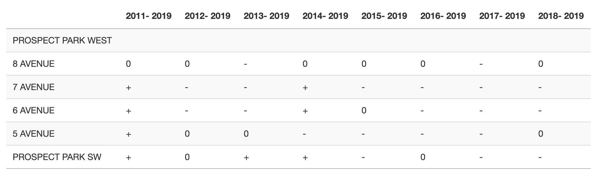
Yet, one of the advantages of creating an interactive application, is the ability to draw dynamic analysis. This visualization clearly highlights the impact of the Covid pandemic on Park Slope real estate:
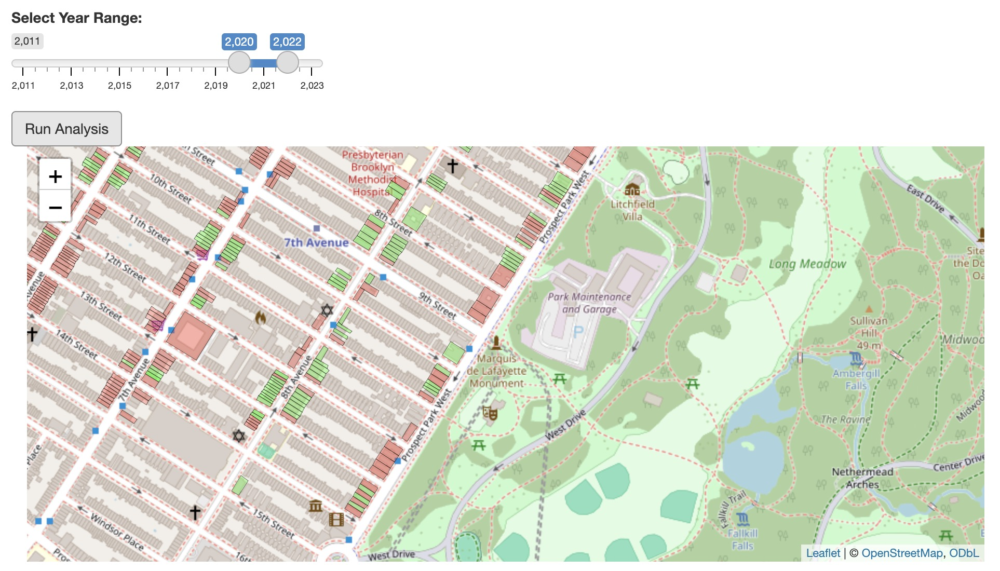
The app also demostrates how resilient and stable property values on Prospect Park West remain - compared the extreme variance seen on other streets - as evidenced by their performance during the height of pandemic:
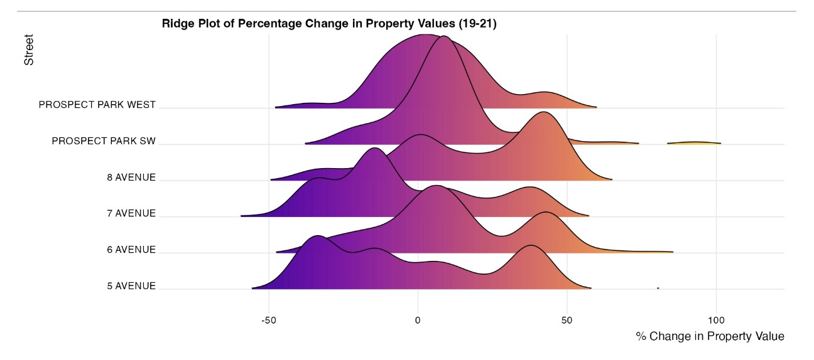
This project originally intended to be a static analysis of statistical significance of the change in property values on Prospect Park West compared to comparable corridors in Park Slope from 2011 (1-year after installation of the Prospect Park bike lane) to today. Despite muddle results in the mid-2010’s, this table communicates a statistically significant increase in property values on Prospect Park West from 2011-2023:
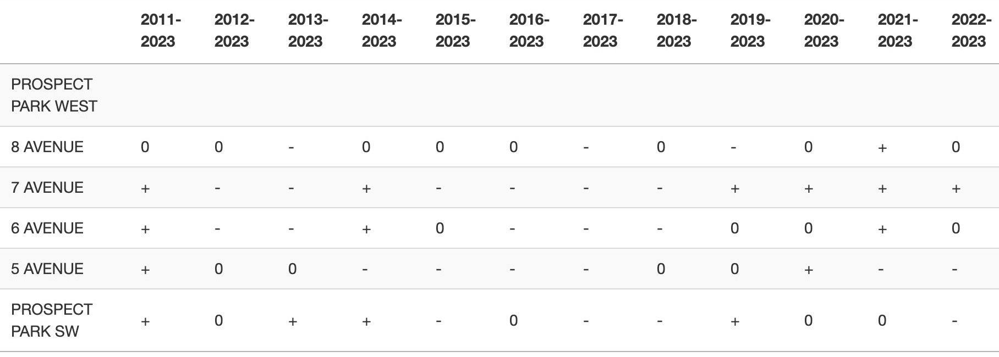
V. Conclusion
This analysis provides valuable insights into the relationship between urban infrastructure improvements and property values, yet it is undeniably complicated by the dominant forces of gentrification.
The impact of traffic calming projects, like the Prospect Park bike lane, cannot be fully disentangled from the broader market pressures of an overheated real estate market in neighborhoods like Brooklyn’s beloved Park Slope.
It raises the question:
Are such projects inherently tied to gentrifying areas, creating a chicken-and-egg dilemma? Are traffic calming initiatives a catalyst or a product of gentrification?
To gain a deeper understanding, future research could examine property values from earlier periods, such as the 1990s and 2000s, and perform a paired t-test on Prospect Park West properties to assess pre- and post-intervention trends. However, challenges exist with the t-tests due to issues like bimodal distributions, extreme outliers, and inconsistent variance in the data. These statistical limitations suggest the need for more robust methodologies, such as non-parametric tests or resampling techniques like bootstrapping, to better capture the complexities and variability in the dataset.
Footnotes
Foderaro, L. W. (2011, March 8). Bike lane debate in Brooklyn is set for court. The New York Times. Retrieved December 19, 2024, from https://www.nytimes.com/2011/03/09/nyregion/09bike.html↩︎
Project for Public Spaces. (n.d.). Prospect Park West: Overcoming controversy to create safety and mobility benefits in Brooklyn. Retrieved December 19, 2024, from https://www.pps.org/article/prospect-park-west-overcoming-controversy-to-create-safety-and-mobility-benefits-in-brooklyn↩︎
New York City Department of Finance. (n.d.). Definitions of property assessment terms. NYC.gov. Retrieved December 19, 2024, from https://www.nyc.gov/site/finance/property/definitions-of-property-assessment-terms.page↩︎
New York City Department of Records and Information Services. (n.d.). Municipal archives. NYC.gov. Retrieved December 19, 2024, from https://www.nyc.gov/site/records/about/municipal-archives.page↩︎